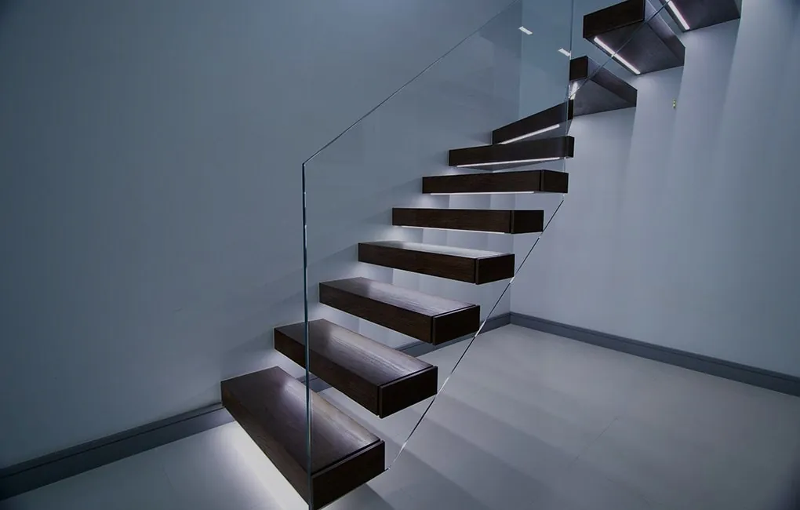

Стеклянные лестницы в Тольятти

Стеклянная лестница – это элемент образа новой эстетики, дизайна и образа жизни.
Стеклянная лестница всегда превосходит ожидания даже самых требовательных Заказчиков и притягивает все восторженные взгляды окружающих.
Действительно изящный и хрупкий на вид материал, как стекло, в повседневной эксплуатации обеспечивает огромную прочность и жесткость конструкции. Стекло, алюминий и нержавеющая сталь – это те материалы, которые лежат в основе каждой стеклянной лестницы. Стекло не подвержено износу и старению, такие лестницы можно смело называть вечными.
Стеклянные лестницы от ДизайнСтекло- это изящные и ажурные конструкции в Тольятти и области. Благодаря основному свойству стекла – прозрачности, в помещении никогда не возникает преград для распространения света, что делает максимально освещенным весь дом.
В то же время стеклянные лестницы выполняют свое главное назначение долго и качественно.
Стеклянные ступени, выполненные из безопасного триплекса (несколько слоев стекол склеенных между собой полимерной пленкой), изготавливаются исключительно из закаленных стекол. В результате одна ступень выдерживает динамическую нагрузку до 500 кг. К тому же, такие стекла являются ударопрочными и травмобезопасными.
Для удобства эксплуатации ступени дополнительно обрабатываются специальным покрытием, исключающим скольжение, даже в случае попадания на них воды или другой жидкости.
Лестницы со ступенями из цветного безопасного стекла
1
Чтобы обозначить невесомость конструкции, большинство лестниц выполняется из прозрачного закаленного стекла. Но также существует множество вариантов цветных стеклянных лестниц. Есть несколько вариантов окраски стекла: это тонированное безопасное стекло в массе или с помощью цветных декоративных пленок.
Наши стеклянные лестницы выполняются из комплектующих собственного производства изготовленных специально для Вашего проекта. Вариантов применения стеклянных лестниц огромное множество от частного дома или многоуровневой квартиры до гостиницы или ресторана.
Лестницы со ступенями из матового стекла триплекс
Матовое стекло очень часто применяется при изготовлении стеклянных ступеней для лестниц. Во первых это более практично, так как на матовом стекле не так сильно видны царапины полученные в ходе эксплуатации. Во вторых матовое стекло это общепризнанная классика. Выбирая матовое стекло для ступеней вы гарантировано не ошибетесь. Эффект матовости достигается специальной обработкой стекла. При необходимости матовое стекло может быть выполнено с художественной матировкой (заматировано частично или с рисунком).
Нержавеющая конструкционная сталь для стеклянных лестниц, рассчитываются нашими конструкторами специально для Вашего проекта. Например каждый кронштейн ступени выдерживает динамическую нагрузку более 2500 кг. Нержавеющая сталь бывает различных сплавов, но самый распространенный сплав AISI 316, который максимально устойчив к агрессивной среде. Нержавеющие лестницы предлагаются в двух пополнениях – глянцевые и матовые.
Винтовые Стеклянные лестницы
Кроме классических лестниц, компания ДизайнСтекло предлагает винтовые стеклянные лестницы. Такая конструкция является сложным инженерным сооружением, но одновременно, потрясающе эффектна на вид, надежна и безопасна в эксплуатации.
ДизайнСтекло предлагает изготовление стеклянных лестниц «под ключ», начиная от замеров на объекте заказчика, проектирования и изготовления комплектующих, до монтажа конструкций.
Мы знаем, что такое идеальный образец изящности, стиля и современности в совершенном интерьере: – стеклянные лестницы от ДизайнСтекло.